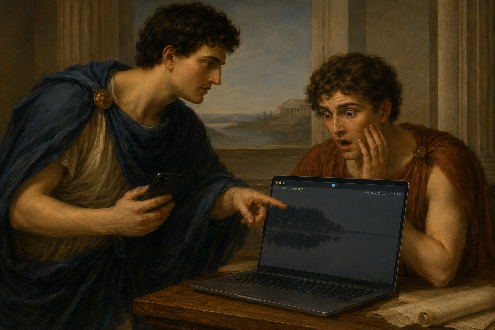

Managed sessions
Onibi owns the tmux-backed PTY, so your terminal follows you without losing its state.
brew install gongahkia/onibi/onibimacOS focused · Linux beta · Apache-2.0

Onibi creates and manages a tmux-backed local shell. Pair one phone by QR, then use its browser as the same terminal—not a second, mirrored workflow.
$ onibi install-hooks --agent claude
$ onibi up --transport=lan
pairing link ready · scan from your phoneSupported agent hooks deliver approval requests directly to your paired cockpit. Read the action, allow it, or deny it before a local command runs.
Onibi hosts the terminal locally. Pairing tokens are single-use and short-lived; the owner browser uses a secure cookie; HTTPS is required. It is a deliberately narrow tool for a single operator and their own machine.
Onibi owns the tmux-backed PTY, so your terminal follows you without losing its state.
Claude Code hooks can pause risky tool calls until you decide from the cockpit.
Use a LAN pairing flow or an authenticated tailnet when you need distance.